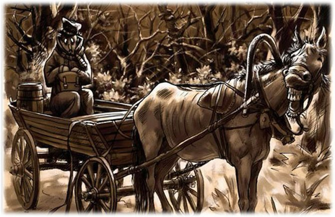
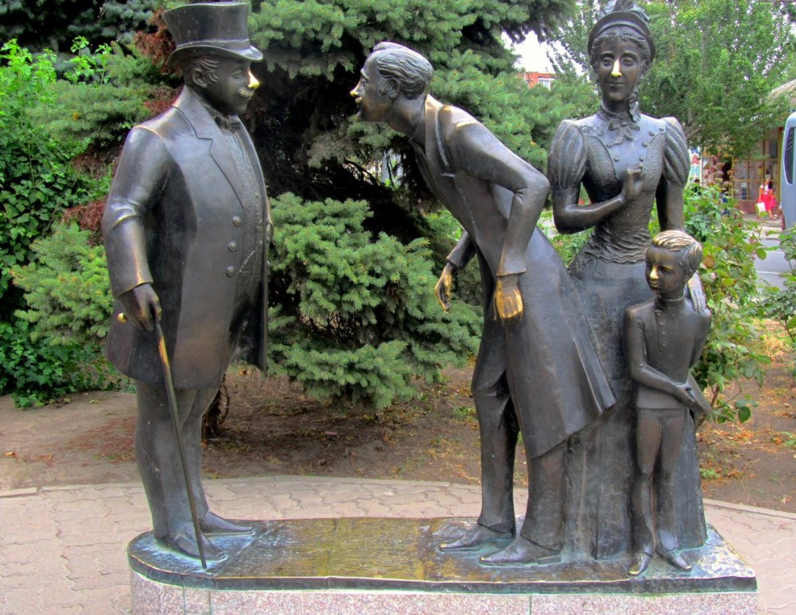
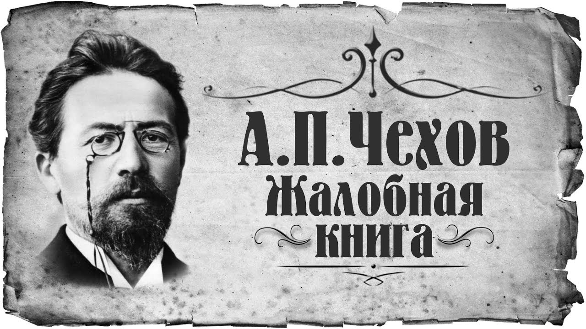

Короткие рассказы Антона Чехова
Антон Чехов, писатель с образованием врача, создал более 300 произведений. В наши дни его пьесы ставят и экранизируют не только в России, но и за рубежом. В своих текстах Чехов поднимал самые разные темы, но вот о самом себе писать не любил. Как сказал он однажды: «у меня болезнь — автобиографофобия».
Антон Чехов — Пересолил: Рассказ
Землемер Глеб Гаврилович Смирнов приехал на станцию «Гнилушки». До усадьбы, куда он был вызван для межевания, оставалось еще проехать на лошадях верст тридцать—сорок. (Ежели возница не пьян и лошади не клячи, то и тридцати верст не будет, а коли возница с мухой да кони наморены, то целых пятьдесят наберется.)
— Скажите, пожалуйста, где я могу найти здесь почтовых лошадей? — обратился землемер к станционному жандарму.
— Которых? Почтовых? Тут за сто верст путевой собаки не сыщешь, а не то что почтовых… Да вам куда ехать?
— В Девкино, имение генерала Хохотова.
— Что ж? — зевнул жандарм. — Ступайте за станцию, там на дворе иногда бывают мужики, возят пассажиров.
Землемер вздохнул и поплелся за станцию. Там, после долгих поисков, разговоров и колебаний, он нашел здоровеннейшего мужика, угрюмого, рябого, одетого в рваную сермягу и лапти.
— Чёрт знает какая у тебя телега! — поморщился землемер, влезая в телегу. — Не разберешь, где у нее зад, где перед…
— Что ж тут разбирать-то? Где лошадиный хвост, там перед, а где сидит ваша милость, там зад…
Лошаденка была молодая, но тощая, с растопыренными ногами и покусанными ушами. Когда возница приподнялся и стегнул ее веревочным кнутом, она только замотала головой, когда же он выбранился и стегнул ее еще раз, то телега взвизгнула и задрожала, как в лихорадке. После третьего удара телега покачнулась, после же четвертого она тронулась с места.
— Этак мы всю дорогу поедем? — спросил землемер, чувствуя сильную тряску и удивляясь способности русских возниц соединять тихую, черепашью езду с душу выворачивающей тряской.
— До-о-едем! — успокоил возница. — Кобылка молодая, шустрая… Дай ей только разбежаться, так потом и не остановишь… Но-о-о, прокля…тая!
Когда телега выехала со станции, были сумерки. Направо от землемера тянулась темная, замерзшая равнина, без конца и краю… Поедешь по ней, так наверно заедешь к чёрту на кулички. На горизонте, где она исчезала и сливалась с небом, лениво догорала холодная осенняя заря… Налево от дороги в темнеющем воздухе высились какие-то бугры, не то прошлогодние стоги, не то деревня. Что было впереди, землемер не видел, ибо с этой стороны всё поле зрения застилала широкая, неуклюжая спина возницы. Было тихо, но холодно, морозно.
«Какая, однако, здесь глушь! — думал землемер, стараясь прикрыть свои уши воротником от шинели. — Ни кола ни двора. Не ровен час — нападут и ограбят, так никто и не узнает, хоть из пушек пали… Да и возница ненадежный… Ишь, какая спинища! Этакое дитя природы пальцем тронет, так душа вон! И морда у него зверская, подозрительная».
— Эй, милый, — спросил землемер, — как тебя зовут?
— Меня-то? Клим.
— Что, Клим, как у вас здесь? Не опасно? Не шалят?
— Ничего, бог миловал… Кому ж шалить?
— Это хорошо, что не шалят… Но на всякий случай все-таки я взял с собой три револьвера, — соврал землемер. — А с револьвером, знаешь, шутки плохи. С десятью разбойниками можно справиться…
Стемнело. Телега вдруг заскрипела, завизжала, задрожала и, словно нехотя, повернула налево.
«Куда же это он меня повез? — подумал землемер. — Ехал всё прямо и вдруг налево. Чего доброго, завезет, подлец, в какую-нибудь трущобу и… и… Бывают ведь случаи!»
— Послушай, — обратился он к вознице. — Так ты говоришь, что здесь не опасно? Это жаль… Я люблю с разбойниками драться… На вид-то я худой, болезненный, а силы у меня, словно у быка… Однажды напало на меня три разбойника… Так что ж ты думаешь? Одного я так трахнул, что… что, понимаешь, богу душу отдал, а два другие из-за меня в Сибирь пошли на каторгу. И откуда у меня сила берется, не знаю… Возьмешь одной рукой какого-нибудь здоровилу, вроде тебя, и…. и сковырнешь.
Клим оглянулся на землемера, заморгал всем лицом и стегнул по лошаденке.
— Да, брат… — продолжал землемер. — Не дай бог со мной связаться. Мало того, что разбойник без рук, без ног останется, но еще и перед судом ответит… Мне все судьи и исправники знакомы. Человек я казенный, нужный… Я вот еду, а начальству известно… так и глядят, чтоб мне кто-нибудь худа не сделал. Везде по дороге за кустиками урядники да сотские понатыканы… По… по…постой! — заорал вдруг землемер. — Куда же это ты въехал? Куда ты меня везешь?
— Да нешто не видите? Лес!
«Действительно, лес… — подумал землемер. — А я-то испугался! Однако, не нужно выдавать своего волнения… Он уже заметил, что я трушу. Отчего это он стал так часто на меня оглядываться? Наверное, замышляет что-нибудь… Раньше ехал еле-еле, нога за ногу, а теперь ишь как мчится!»
— Послушай, Клим, зачем ты так гонишь лошадь?
— Я ее не гоню. Сама разбежалась… Уж как разбежится, так никаким средствием ее не остановишь… И сама она не рада, что у ней ноги такие.
— Врешь, брат! Вижу, что врешь! Только я тебе не советую так быстро ехать. Попридержи-ка лошадь… Слышишь? Попридержи!
— Зачем?
— А затем… затем, что за мной со станции должны выехать четыре товарища. Надо, чтоб они нас догнали… Они обещали догнать меня в этом лесу… С ними веселей будет ехать… Народ здоровый, коренастый… у каждого по пистолету… Что это ты всё оглядываешься и движешься, как на иголках? а? Я, брат, тово… брат… На меня нечего оглядываться… интересного во мне ничего нет… Разве вот револьверы только… Изволь, если хочешь, я их выну, покажу… Изволь…
Землемер сделал вид, что роется в карманах, и в это время случилось то, чего он не мог ожидать при всей своей трусости. Клим вдруг вывалился из телеги и на четвереньках побежал к чаще.
— Караул! — заголосил он. — Караул! Бери, окаянный, и лошадь и телегу, только не губи ты моей души! Караул!
Послышались скорые, удаляющиеся шаги, треск хвороста — и всё смолкло… Землемер, не ожидавший такого реприманда, первым делом остановил лошадь, потом уселся поудобней на телеге и стал думать.
«Убежал… испугался, дурак… Ну, как теперь быть? Самому продолжать путь нельзя, потому что дороги не знаю, да и могут подумать, что я у него лошадь украл… Как быть?» — Клим! Клим!
— Клим!.. — ответило эхо.
От мысли, что ему всю ночь придется просидеть в темном лесу на холоде и слышать только волков, эхо да фырканье тощей кобылки, землемера стало коробить вдоль спины, словно холодным терпугом.
— Климушка! — закричал он. — Голубчик! Где ты, Климушка?
Часа два кричал землемер, и только после того, как он охрип и помирился с мыслью о ночевке в лесу, слабый ветерок донес до него чей-то стон.
— Клим! Это ты, голубчик? Поедем!
— У… убьешь!
— Да я пошутил, голубчик! Накажи меня господь, пошутил! Какие у меня револьверы! Это я от страха врал! Сделай милость, поедем! Мерзну!
Клим, сообразив, вероятно, что настоящий разбойник давно бы уж исчез с лошадью и телегой, вышел из лесу и нерешительно подошел к своему пассажиру.
— Ну, чего, дура, испугался? Я… я пошутил, а ты испугался… Садись!
— Бог с тобой, барин, — проворчал Клим, влезая в телегу. — Если б знал, и за сто целковых не повез бы. Чуть я не помер от страха…
Клим стегнул по лошаденке. Телега задрожала. Клим стегнул еще раз, и телега покачнулась. После четвертого удара, когда телега тронулась с места, землемер закрыл уши воротником и задумался. Дорога и Клим ему уже не казались опасными.
Антон Чехов — Толстый и тонкий: Рассказ
На вокзале Николаевской железной дороги встретились два приятеля: один толстый, другой тонкий. Толстый только что пообедал на вокзале, и губы его, подернутые маслом, лоснились, как спелые вишни. Пахло от него хересом и флердоранжем. Тонкий же только что вышел из вагона и был навьючен чемоданами, узлами и картонками. Пахло от него ветчиной и кофейной гущей. Из-за его спины выглядывала худенькая женщина с длинным подбородком — его жена, и высокий гимназист с прищуренным глазом — его сын.
— Порфирий! — воскликнул толстый, увидев тонкого. — Ты ли это? Голубчик мой! Сколько зим, сколько лет!
— Батюшки! — изумился тонкий. — Миша! Друг детства! Откуда ты взялся?
Приятели троекратно облобызались и устремили друг на друга глаза, полные слез. Оба были приятно ошеломлены.
— Милый мой! — начал тонкий после лобызания. — Вот не ожидал! Вот сюрприз! Ну, да погляди же на меня хорошенько! Такой же красавец, как и был! Такой же душонок и щеголь! Ах ты, господи! Ну, что же ты? Богат? Женат? Я уже женат, как видишь… Это вот моя жена, Луиза, урожденная Ванценбах… лютеранка… А это сын мой, Нафанаил, ученик третьего класса. Это, Нафаня, друг моего детства! В гимназии вместе учились!
Нафанаил немного подумал и снял шапку.
— В гимназии вместе учились! — продолжал тонкий. — Помнишь, как тебя дразнили? Тебя дразнили Геростратом за то, что ты казенную книжку папироской прожег, а меня Эфиальтом за то, что я ябедничать любил. Хо-хо… Детьми были! Не бойся, Нафаня! Подойди к нему поближе… А это моя жена, урожденная Ванценбах… лютеранка.
Нафанаил немного подумал и спрятался за спину отца.
— Ну, как живешь, друг? — спросил толстый, восторженно глядя на друга. — Служишь где? Дослужился?
— Служу, милый мой! Коллежским асессором уже второй год и Станислава имею. Жалованье плохое… ну, да бог с ним! Жена уроки музыки дает, я портсигары приватно из дерева делаю. Отличные портсигары! По рублю за штуку продаю. Если кто берет десять штук и более, тому, понимаешь, уступка. Пробавляемся кое-как. Служил, знаешь, в департаменте, а теперь сюда переведен столоначальником по тому же ведомству… Здесь буду служить. Ну, а ты как? Небось уже статский? А?
— Нет, милый мой, поднимай повыше, — сказал толстый. — Я уже до тайного дослужился… Две звезды имею.
Тонкий вдруг побледнел, окаменел, по скоро лицо его искривилось во все стороны широчайшей улыбкой; казалось, что от лица и глаз его посыпались искры. Сам он съежился, сгорбился, сузился… Его чемоданы, узлы и картонки съежились, поморщились… Длинный подбородок жены стал еще длиннее; Нафанаил вытянулся во фрунт и застегнул все пуговки своего мундира…
— Я, ваше превосходительство… Очень приятно-с! Друг, можно сказать, детства и вдруг вышли в такие, вельможи-с! Хи-хи-с.
— Ну, полно! — поморщился толстый. — Для чего этот тон? Мы с тобой друзья детства — и к чему тут это чинопочитание!
— Помилуйте… Что вы-с… — захихикал тонкий, еще более съеживаясь. — Милостивое внимание вашего превосходительства… вроде как бы живительной влаги… Это вот, ваше превосходительство, сын мой Нафанаил… жена Луиза, лютеранка, некоторым образом…
Толстый хотел было возразить что-то, но на лице у тонкого было написано столько благоговения, сладости и почтительной кислоты, что тайного советника стошнило. Он отвернулся от тонкого и подал ему на прощанье руку.
Тонкий пожал три пальца, поклонился всем туловищем и захихикал, как китаец: «Хи-хи-хи». Жена улыбнулась. Нафанаил шаркнул ногой и уронил фуражку. Все трое были приятно ошеломлены.
Антон Чехов — Жалобная книга: Рассказ
Лежит она, эта книга, в специально построенной для нее конторке на станции железной дороги. Ключ от конторки «хранится у станционного жандарма», на деле же никакого ключа не нужно, так как конторка всегда отперта. Раскрывайте книгу и читайте:
«Милостивый государь! Проба пера!?»
Под этим нарисована рожица с длинным носом и рожками. Под рожицей написано:
«Ты картина, я портрет, ты скотина, а я нет. Я — морда твоя».
«Подъезжая к сией станцыи и глядя на природу в окно, у меня слетела шляпа. И. Ярмонкин».
«Кто писал не знаю, а я дурак читаю».
«Оставил память начальник стола претензий Коловроев».
«Приношу начальству мою жалобу на Кондуктора Кучкина за его грубости в отношении моей жене. Жена моя вовсе не шумела, а напротив старалась чтоб всё было тихо. А также и насчет жандарма Клятвина который меня грубо за плечо взял. Жительство имею в имении Андрея Ивановича Ищеева который знает мое поведение. Конторщик Самолучшев».
«Никандров социалист!»
«Находясь под свежим впечатлением возмутительного поступка… (зачеркнуто). Проезжая через эту станцию, я был возмущен до глубины души следующим… (зачеркнуто). На моих глазах произошло следующее возмутительное происшествие, рисующее яркими красками наши железнодорожные порядки… (далее всё зачеркнуто, кроме подписи). Ученик 7-го класса Курской гимназии Алексей Зудьев».
«В ожидании отхода поезда обозревал физиогномию начальника станции и остался ею весьма недоволен. Объявляю о сем по линии. Неунывающий дачник».
«Я знаю кто это писал. Это писал М. Д.».
«Господа! Тельцовский шуллер!»
«Жандармиха ездила вчера с буфетчиком Костькой за реку. Желаем всего лучшего. Не унывай жандарм!»
«Проезжая через станцию и будучи голоден в рассуждении чего бы покушать я не мог найти постной пищи. Дьякон Духов».
«Лопай, что дают»…
«Кто найдет кожаный портсигар тот пущай отдаст в кассу Андрею Егорычу».
«Так как меня прогоняют со службы, будто я пьянствую, то объявляю, что все вы мошенники и воры. Телеграфист Козьмодемьянский».
«Добродетелью украшайтесь».
«Катинька, я вас люблю безумно!»
«Прошу в жалобной книге не писать посторонних вещей. За начальника станции Иванов 7-й».
«Хоть ты и седьмой, а дурак».